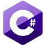

Cuauhtli Fernando Benavides Hernández
Resumen
Estudiante de ingeniería en computación, técnico en Informática, entusiasta de las tecnologías de la información, la programación e inteligencia artificial. Entre mis pasatiempos están escuchar música, jugar videojuegos, leer y aprender nuevas cosas.
Estudios
Técnico Profesional en Informática (TPI) en la escuela Politécnica de Guadalajara (2012 - 2016)
Ingeniería en computación (INCO) en el Centro Universitario de Ciencias Exactas e ingenierías "CUCEI" (2016 - 2020)
Idiomas
Español (Nativo)
Inglés (Intermedio)
Experiencia
Servicio social - Desarrollador web (Agosto 2019 - Abril 2020)
Desarrollador PHP de sistemas destinados a la automatización de procesos administrativos en la Universidad Tecnológica de Jalisco (UTJ), durante este periodo se desarrollaron 2 proyectos, estos están destinados a la automatización de procesos administrativos de UTJ y la ANUIES. Las actividades incluyeron el estudio y levantamiento de requerimientos de los proyectos, diseño y maquetado de las vistas, programación de las funciones de los sistemas, pruebas, documentación y presentación final del software producido.
Desarrollador web (Marzo 2019 - Noviembre 2019)
Desarrollador web, desarrollador Frontend de aplicaciones móviles, auxiliar de soporte técnico e instalador de infraestructura de red en Inovag SA de CV, durante ese tiempo, desarrollé distintas páginas web informativas, tanto para la empresa como para sus asociadas, haciendo diseños desde 0 o desde WordPress, también realicé el diseño Frontend de una aplicación móvil y actué como auxiliar y apoyo durante la instalación de las redes de la empresa y sus asociadas.
Practicas profesionales - Instalador de cableado estructurado (Enero 2016 - Mayo 2016)
Instalador de cableado estructurado, técnico en redes y soporte técnico en el Ayuntamiento de Guadalajara, donde realicé soporte, instalación y reparación de las redes internas de las dependencias del ayuntamiento en sus distintas sedes.
Servicio social - Auxiliar administrativo (Febrero 2015 - Agosto 2015)
Auxiliar administrativo en el área de control escolar en la Escuela Politécnica de Guadalajara, donde realizaba actividades como atención a alumnos, realización de tramites escolares, elaboración de documentos, control de listas, capturista de datos, entre otras.
Proyectos
TeachMe
Bombs & Dragons
Programa Institucional de Tutorías (PIT)
IAntic
Inovag web page
Jeopardy!
Contacto
- Email cuauh.fer.bh@gmail.com
- Telefóno 33 1069 4784
- Whatsapp 33 1069 4784
- Telegram @cuauhfer
- LinkedIn Cuauhtli Fernando Benavides Hernández
- Github github.com/cuauhfer
Conocimientos
- Python 75%
-
 Django
70%
Django
70%
- JavaScript 75%
- JQuery 70%
- HTML 90%
- CSS 80%
- SASS 60%
- PHP 70%
- Git 70%
- C++ 60%
-  C# 60%
- Java 50%
- Ionic 60%
- MySQL 70%
- MongoDB 70%
- Office 80%